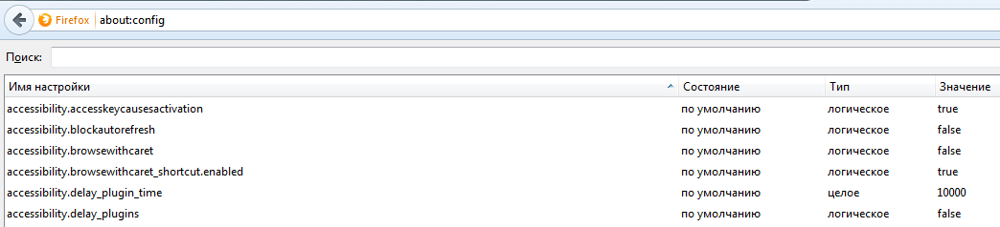
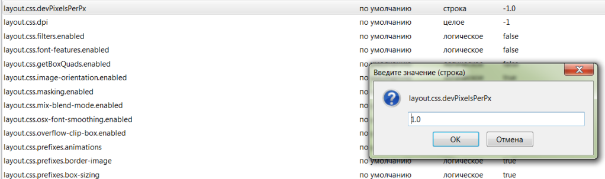

Часто задаваемые вопросы
Q: В Mozilla Fierfox некорректно отображаются страницы. Съезжают поля выбора, кнопки и т.п.
А: Введите в поле ввода адреса about:config (либо нажмите на приведенную ссылку) и нажмите <Enter>, на экране отобразится страница с настройками:

Найдите параметр layout.css.devPixelsPerPx (можно воспользоваться поиском по странице) и с помощью двойного щелчка мышки на параметре, измените значение с -1.0 (что соответствует 125%, как установленно по умолчанию в Windows 7, от реального размера) на 1.0, как показано на картинке:

Q: Принтер не распечатывает билеты.
А: Если была переустановка принтера на новый компьютер, то необходимо проделать действия описанные в разделе - Настройка термопринтера Zebra GK-420d.
Если никаких изменений не проводилось, то такая проблема может возникнуть в двух случаях:
В строке URL-адреса введите:
chrome://flags/#enable-npapi
Щелкните ссылку Включить рядом с параметром настройки Включить NPAPI.
Щелкните кнопку Перезапустить, которая появилась в нижней части страницы настройки.
|